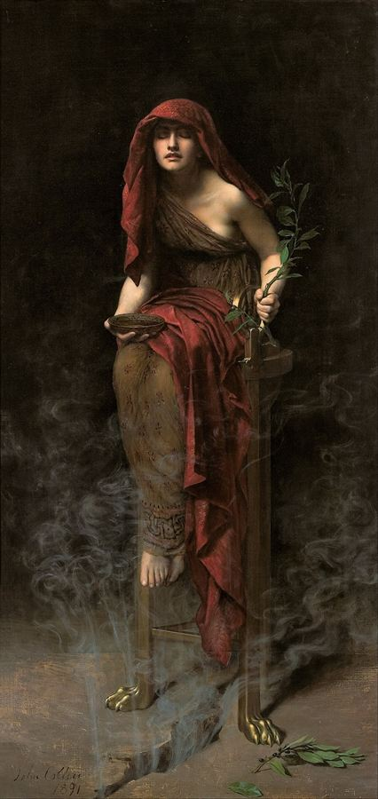

τί ἐστι;John Collier, Priestess of Delphi, 1891
Nozick's challenge, Fine's reply, and where both sit on the Vlastos–Irwin axis
Two questions, each with a four-way answer.
Q1 — the disavowal. When Socrates says he does not know, what does he think he still has? Certainty-knowledge only is denied (Vlastos) · nothing but true belief (Irwin) · not even true belief about definitions (Nozick) · Nozick's Socrates is actually the richest of the three (Fine).
Q2 — the elenchus. What must a person already have for refutation to move them towards the truth rather than away from it? True beliefs (Vlastos's assumption) · knowledge (Nozick) · true beliefs, if they include priority rankings (Fine) · and Fine's decisive move: Plato himself sides against Nozick.
Read the columns downward. The disagreement is not about whether Socrates is sincere — all four say he is.
| On Socrates' own epistemic state | Vlastos | Irwin | Nozick | Fine's verdict |
|---|---|---|---|---|
| How many senses of "know"? | Two. KE (elenctic) and KC (certainty) PQ 1985 | One. No hidden second sense PMT 39–42 | One. He does not use the two-senses move | Nozick "presents his answer as an alternative to theirs" but ends up nearer them than he thinks Fine 233 |
| Does Socrates claim any knowledge? | Yes — quite a lot of KE | No — none, in any sense | Yes — of the Socratic doctrines, though not of "What is F?" Noz. 144 | "despite Nozick's claim to differ from Vlastos, they agree that Socrates claims to have some knowledge" Fine 236 |
| Does he claim true belief about definitions? | Not addressed explicitly Fine 237 n. 11 | Yes — some conditions, some content PMT 293 n. 2; PE 22–5 | No — "he doesn't even have true belief" Noz. 145 | But at Noz. 147 he writes "completely adequate," which lets some true belief back in — "This, we have seen, is Irwin's view" Fine 237 |
| The scope problem (Meno 71b: no knowledge of F's properties without knowing what F is) | Solved by denying the early dialogues accept the Meno-principle PQ 25–6 | Accepts the priority of definition — that is why the disavowal is global PE 28 | Not mentioned — "Nozick does not mention this difficulty for his view, let alone suggest an answer to it" Fine 238 | Fine flags Benson, OSAP 8 (1990) 19–65 for the view that the early dialogues are committed to it Fine 238 n. 14 |
Fine's n. 6 Fine 234–235 traces Irwin across three stages, and it independently confirms the 1977→1995 reading: PMT p. 58 says Socrates affirms moral knowledge "once, but only once" (Ap. 29b6–7) and offers no reconciliation; 'Socratic Inquiry and Politics', Ethics 96 (1986), p. 408 adds two further exceptions (Grg. 511e8, 521b5–6) and admits he has "no solution to offer"; PE pp. 28–9 finally supplies one — the "human wisdom" reading, on which "'human' cancel[s] the suggestion that this is genuine wisdom (just as fake diamonds are not real diamonds)." Fine's conclusion: "Hence PE denies that there are any avowals of knowledge."
Section 1 of his paper, pp. 143–147. The thesis is one sentence long; the argument for it is an analogy.
"Socrates does not (generally) deny knowledge of the Socratic doctrines (it is better to suffer injustice than to do it, etc.) but of the answers to the 'What is F?' questions he pursues with others… Not knowing these things is compatible with his knowing other things" Noz. 144. His superior wisdom "resides in his knowing that he doesn't know, and cannot produce, the correct answer to these 'What is F?' questions" — and there is no self-contradiction, because that piece of knowledge "is not itself the answer to one of his 'What is F?' questions."
Nozick's opening move is a point about conversational implicature, not about texts. Hearers "would have taken him to mean that he doesn't have the truth, whereas Irwin and Vlastos interpret him as saying that he doesn't know the truth. Their interpretations might rescue the literal truth of Socrates' denial but they leave him generating misleading implicatures" Noz. 145.
"I suggest that when Socrates says he himself doesn't know the answers to these questions, he means not just that he doesn't know the truth but that he doesn't have the truth; he doesn't even have true belief." Nozick, "Socratic Puzzles" p. 145 — the paper's central claim
Nozick runs the post-Gettier history against itself Noz. 146: knowledge is not true belief (Theaetetus); not justified true belief (Gettier); not truth-caused belief (the man in the tank); is it truth-tracking? — "I said yes in Philosophical Explanations, but others have raised objections." So "a reasonable philosopher today might say that… he just does not know" what knowledge is. And crucially, he means something specific by that: not that he has an account he believes but is not certain of, but "that there are not conditions he is prepared to put forth, not conditions he believes will not succumb to further counterexamples."
Yet this philosopher still knows a great deal: he knows knowledge is not justified true belief, and his best account "while itself false and inadequate, is more adequate, is closer to the truth… than the earlier accounts" Noz. 147. That is Nozick's Socrates. "Hence, Socrates was not being ironic when he denied knowing the answers. He did not know. And he knew he did not."
Nozick quotes Vlastos on Euthyphro — that Socrates reached a revolutionary conception of piety even though "it is by no means clear that Socrates himself would have been able" to devise "an elenctically foolproof definition" Vlastos 1991, 175–176, at Noz. 146. Nozick takes the concession and generalises it: the gap between an insight and a definition is exactly the gap the reasonable epistemologist lives in.
Section 2, pp. 147–151. This is the part that matters for your development map, and the part Fine spends most of her reply on.
"An inconsistency reveals that we must have some false belief, but we do have many false beliefs anyway — few of us believe all of our beliefs are true — so why is inconsistency especially bad?" Noz. 147. His answer: about evaluative concepts, error "either… itself constitutes a defect in the state of one's soul, or… easily can lead to one."
He adds a defence of the search for definitions that Irwin would recognise: an explicit standard "can prevent being thrown into confusion by arguments that seem to show that F is impossible" — his example is the sceptic's tank argument — so that "explicit understanding of what constitutes knowledge (or F) makes your beliefs about knowledge (or F) more stable" Noz. 148. Stability is already doing the work here, before the formal argument begins.
Nozick's own footnote 15 explains them: "Vlastos's assumption speaks only of belief, the second one speaks also of knowledge, and the third one speaks of how inconsistencies are resolved" Noz. 150 n. 15. (Vlastos labels the first one (A) in "The Socratic Elenchus"; Nozick relabels it (B), and Fine follows Nozick.)
"When an inconsistency is discovered among a person's beliefs p and q, he can remove that inconsistency by denying the true one p or by denying the false one q. What stops him from denying the true statement p? If the belief that p and the belief that q are each merely beliefs, they seem on a par. What, then, prevents elenchus from leading him further from the truth?" Noz. 149
He credits Vlastos with naming this "the puzzle of the elenchus" (Socrates, p. 15) but adds that "in stating only (B) he does not reach all the way to an answer" Noz. 149 n. 13.
On the tracking analysis, knowing that p requires (4) that if p were true, the person would believe it. So "the belief that p is stable under small enough perturbations… These include the worlds where p comes into conflict with a false belief in q; even there the person believes that p" Noz. 150. Hence "In this elenctic competition, knowledge is more fit than false belief, and so tends to be selected for." He is careful: "I do not want to insist that this particular tracking condition is a part of the (correct) analysis of knowledge" — any condition delivering the extra stability would serve.
"Elenchus is an effective route to reaching such evaluative truths, on this account, only for persons who satisfy conditions (K) and (R), that is, only for people who already do have some knowledge about these evaluative matters. So elenchus (if it is reliably effective) cannot be the only route to knowledge about these matters" Noz. 151.
And on why the same method never reaches a definition, he offers a deflationary answer plus a jab: perhaps definitions are simply reachable only after a number of steps "so large… that no one has yet reached that resultant stage." "Analytic philosophers should not tax Socrates with these questions when they themselves lack a satisfactory explanation for why their own stock of correct analyses is so meager" Noz. 151.
Section 3, pp. 151–155. Fine does not discuss this part; it is worth knowing because it answers a charge you will meet in Vlastos.
Vlastos, in "The Paradox of Socrates" (1958), charged Socrates with "a last zone of frigidity in the soul of the great erotic" — "Jesus wept for Jerusalem. Socrates warns Athens, scolds, exhorts it, condemns it. But he has no tears for it" quoted at Noz. 151. Nozick's reply is internal: on Socrates' own doctrines, virtue is knowledge; true belief is unstable and so "an insufficient guide and gyroscope"; and knowledge cannot be transmitted by authority, since "at best, that will give them an unstable true belief, open to upsetting by the next contrary 'authority'." Therefore "Socrates is not insisting upon saving his fellow citizens his way. There is no other way" Noz. 152.
He notes in a footnote that Vlastos himself abandoned the thesis by 1991 — persuaded by a seminar student, Don Adams — "Vlastos does not state what reasons convinced him to change his view" Noz. 151–152 n. 17.
"Socrates has doctrines but what he teaches is not a doctrine but a method of inquiry… Their job is to catch on, and to go on" Noz. 153. And more than the method: "It is not his method alone that teaches us but rather that method (and those doctrines it has led him to) as embodied in Socrates… Socrates teaches with his person. Buddha and Jesus did as well. Socrates is unique among philosophers in doing this" Noz. 153. He is candid that the Crito's arguments "are weak, after all" and insufficient Noz. 154 — yet the conclusion is right, and what carries it is the manner of the dying. He calls this "the method of embodiment," standing "alongside his method of elenchus" Noz. 155. He also concedes it is "not something that Socrates himself would have said or believed."
Sections 1–2 of her paper, pp. 233–238. Her method is diagnostic: she separates what Nozick advertises from what he can actually hold.
"so far from Socrates' thinking he has one kind of knowledge (if not another), or knowledge of some things (but not of others), or true beliefs (if not knowledge), he actually denies that he has any true (moral) beliefs. Rather, he takes his (moral) beliefs to be false, though closer to the truth than are the beliefs of his interlocutors" Fine 235. "This would be a radical, and provocative, view."
Her footnote 7 points where it would land: alongside the ancient sceptical Socrates (Annas, "Plato the Sceptic," OSAP suppl. 1992, 43–72) — the very reading Irwin canvasses and rejects at PE p. 18 (Cicero, Ac. 1.16). "However, (N1) is not Nozick's view."
Nozick's denial "is restricted to definitions" Fine 235–236, while p. 144 gives Socrates knowledge of the doctrines. So: "(N2) is in fact a version of (2) above" — that is, a version of Vlastos's second explanation. "So despite Nozick's claim to differ from Vlastos, they agree that Socrates claims to have some knowledge" Fine 236.
Because at Noz. 147 he writes that Socrates "didn't have a completely adequate true belief" — the emphasis is Fine's — some true belief survives. So Nozick "seems to favor (N3)":
| Clause | Content (Fine 237) | Aligns with |
|---|---|---|
| (i) | Socrates thinks he has some moral knowledge | Vlastos — against Irwin |
| (ii) | He doesn't think he knows the answers to "What is F?" | Both |
| (iii) | Nor does he think he has true beliefs about the complete content, or the complete set of necessary and sufficient conditions | Irwin |
| (iv) | But he has some true beliefs about some conditions and some content | Irwin |
Nozick's opening objection was that Vlastos and Irwin leave Socrates "generating misleading implicatures." Fine: on N2 or N3 "Socrates takes himself to have some true beliefs, in which case he does have the truth (or takes himself to have it, in part). Hence… Nozick's Socrates is just as misleading as Nozick takes Vlastos' and Irwin's Socrates to be" Fine 237–238.
And she is not neutral about who is actually misleading: "I do think that Vlastos' Socrates is misleading, as Vlastos may agree: at least, he says that Socrates' disavowal is a 'front' (p. 22), pronounced 'almost furtively' (p. 23). But I don't think Irwin's Socrates is misleading. Irwin's Socrates simply denies that he has any knowledge whatsoever. Since knowledge is not true belief, denying knowledge is perfectly straightforward" Fine 238 n. 13.
Worth extracting because it is her own view, not a report of anyone's: "I myself do not think that Socrates ever takes knowledge to be 'merely justifiable true belief', nor do I think that anyone ought to accept that as an account of knowledge; for it collapses the distinction between knowledge and true belief. (At least, this is so on the reasonable assumption that every true belief is justifiable)" Fine 234 n. 4. That is the objection to KE in one line — and it is why she does not need Vlastos's two tiers.
Section 3, pp. 238–244. Three objections, of ascending force.
Her worked example, from Laches 192c–d Fine 240. Three beliefs: (1) endurance is courage — a proposed definition, and false; (2) courage is kalon — a principle, true; (3) endurance is sometimes not kalon — a counter-example, true. Nozick is right that the mere truth of (2) and (3) won't make you keep them. But add a fourth belief — "that when beliefs about definitions, principles, and proposed counter-examples conflict, I should favor beliefs about principles and counter-examples" — and the definition goes.
"Nozick's claim that we need to posit not just true beliefs but also tendencies to favor them over falsehoods thus seems right if we restrict beliefs to first order beliefs. But his claim is less clearly right if the relevant stock of true beliefs is large enough… If (B) includes such beliefs, then I am not sure that Nozick has shown it fails."
Fine's n. 19 Fine 240: "Irwin, PE, pp. 48–50, discusses the 'guiding principles' of the elenchus; these include priority rankings among various sorts of beliefs. However, he does not bring this to bear on the question of whether tendencies as well as true beliefs are needed in order to make progress in the elenchus."
Those are Irwin's five guiding principles — the ones where principle (5) says that when the "always fine and beneficial" principle conflicts with a judgment about examples, the principle overrides the example (La. 197a1–c9; Ch. 175e5–176a1). Fine is pointing out that Irwin has already written down exactly the higher-order machinery that answers Nozick — and never noticed. If you want one place where all four of these authors are doing the same work, this is it.
At Noz. 149 the claim is that knowledge is sufficient for reliable progress. Fine: "That may be right. But it doesn't show that Vlastos is wrong to say that true beliefs are also sufficient." Then at Noz. 151 the claim has become necessary — "only for people who already do have some knowledge" — and Fine notes this arrives "with no additional arguments besides the ones I go on to discuss" Fine 240. She also observes that (K) is vulnerable to Nozick's own objection — "what is to prevent someone from wrongly abandoning a proposition he knows? Mightn't a modest knower be talked out of a proposition he knows by a very clever speaker he unfortunately trusts?" — which is why (R) has to be added Fine 241.
First she gives Nozick something he missed: he "does not cite any Platonic license for linking stability and knowledge. But he might have done so" — Meno 98a: knowledge differs from true belief by the bond (desmos) of an aitias logismos, and that in turn (epeita, 98a6) makes it more stable (monimon) Fine 241–242.
Then she takes it back: "it is one thing to link knowledge and stability, and quite another to say that having knowledge as so conceived is necessary for using the elenchus so as to make progress." And Plato denies exactly that. The road to Larissa (M. 97a–b): someone who does not know the route "can nonetheless guide someone there correctly, so long as he has true beliefs about the route." The slave (M. 85b–d): he "was able to engage in elenctic reasoning — in a way that made progress because, though he lacked knowledge, he had true beliefs." Conclusion: "unlike Nozick, Plato does not think that we need to posit present knowledge… in his view, having true beliefs will do" Fine 242.
"He explains this by appealing to past knowledge, knowledge had in another life. So Plato does appeal to knowledge — though perhaps to explain our having true beliefs rather than certain tendencies. But whereas Nozick requires us to know now, Plato says that we do not know now, though we once knew" Fine 242.
And a scope point against Nozick: he needs knowledge of all the qs and rs, which include propositions about particular cases — "But discarnate souls do not seem to have such knowledge; their knowledge seems to be restricted to general truths" Fine 243, reading M. 81d4–5 ("virtue and the other things," all zētein kai manthanein) as restricting 81c6's "all things," and explicitly contrasting Vlastos, who takes discarnate souls to be omniscient Fine 240 n. 20, 243 n. 26.
"If one's beliefs about virtue aren't true, but are close to being true, are in the right ball park, then, when faced with contradictions among one's beliefs, one will tend to make progress towards improving one's epistemic position. I myself think this view is quite defensible" Fine 243. That is the position N1 would have needed — and it would have made Nozick's Socrates genuinely new. He does not take it, "One more reason, then, for thinking that he does not mean to endorse (N1)."
"But then, so far from Nozick's Socrates taking himself to be in a more impoverished epistemic state than Vlastos and Irwin take him to be in, he takes him to be in a richer epistemic state than they do. This, however, does not detract from the value of Nozick's paper: I take myself to be in a richer epistemic state for having read and thought about it." Fine, "Nozick's Socrates" pp. 243–244 — the last words of the paper
Q2: what must you already have for the elenchus to move you towards truth rather than away from it?
| Author | Minimum required | Why | Consequence for the elenchus |
|---|---|---|---|
| Vlastos (1983) | True belief — assumption (A)/(B) | Everyone carries true beliefs entailing the negation of their false ones. Never argued for; grounded later by recollection PQ n. 44 | The elenchus is self-standing in the early dialogues, but the assumption it rests on "must await the metaphysical grounding it will be given by Plato in the Meno" |
| Irwin (1995) | True belief plus guiding principles | Five principles the interlocutors accept, including a ranking that lets a principle override an example PE 49–50 | Constructive without any knowledge at all; the Meno only makes explicit what was already implicit PE 143 |
| Nozick (1995) | Knowledge — (K) plus (R) | Two mere beliefs are "on a par"; only knowledge has the modal stability that makes it stickier under conflict Noz. 149–150 | "Elenchus… cannot be the only route to knowledge" Noz. 151 — it presupposes an unexplained prior stock |
| Fine (1996) | True belief — if rich enough to include priority rankings; possibly only near-true belief | Higher-order beliefs supply the tendency Nozick wants without upgrading to knowledge; and M. 97a–b, 85b–d say true belief suffices Fine 240, 242 | Recollection explains why we hold the true beliefs — it does not mean we now know. "We do not know now, though we once knew" |
On Q2, Fine and Irwin are on the same side — true belief plus structure is enough — while Nozick sides with the intuition behind Vlastos's worry but raises the price to knowledge. On Q1 the alignment flips: Nozick and Vlastos both give Socrates knowledge, while Irwin gives him none and Fine finds Irwin's Socrates the least misleading of the three Fine 238 n. 13. Nobody occupies the same square twice. That is why the debate does not resolve into two camps.
Three concrete things, in order of usefulness.
Fine's paper is a four-page reply, not a treatment. She does not argue for her own account of Socratic knowledge in it — she refers you to "Inquiry in the Meno," in Kraut (ed.), The Cambridge Companion to Plato (1992), 200–226 Fine 242 n. 24. And she nowhere disputes Nozick's third section. If you want the constructive version of what she only gestures at here — the "right ball park" idea at Fine 243 — that is where to go next.